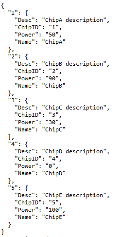

Notatka Laboratorium 3
1 Formaty danych
1.1 CSV/DSV
CSV (Comma Separated Values) to plik tekstowy, w którym wartości rozdzielane są przecinkami, a kolejne wiersze znakiem nowej linii. Plik CSV zazwyczaj przechowuje dane tabelaryczne. Nagłówki kolumn są często dołączane jako pierwszy wiersz (są to nazwy zmiennych), a każdy kolejny wiersz odpowiada jednej obserwacji (jednemu wierszowi w tabeli danych).
CSV jest szczególnym przypadkiem formatu danych o nazwie Delimiter Seperated Values (DSV). Jest to plik tekstowy w którym pola w każdym wierszu oddzielone są dowolnym separatorem. Najczęściej spotykane separatory to: przecinek (CSV), tabulator (TSV), średnik.
Przykładowy plik CSV

1.2 XML
XML to skrót od nazwy Extensible Markup Language. Dane przechowywane w tym formacie mają zagnieżdżoną strukturę: znaczniki oznaczają nazwy zmiennych, a wewnątrz przechowywane są ich wartości. XML swoją strukturą przypomina plik HTML.
Przykładowy plik XML

1.3 JSON
JSON - JavaScript Object Notation - to format przydatny w przypadku pracy z danymi pochodzącymi z REST API, czyli pobieranymi z sieci. Niektóre bazy danych również komunikują się za pomocą tego formatu, np. MongoDB.
Struktura: w pliku JSON obserwacje przechowywane są w słownikach, w których nazwy zmiennych są kluczami, a wartości zmiennych - wartościami. Obserwacje oddzielane są przecinkami, a dodatkowo, wszystkie dane spięte są nawiasami klamrowymi.
Przykładowy plik JSON

1.4 Excel (XLSX)
XLSX to format danych oparty na XML. Pliki tego typu są domyślnymi dokumentami wyjściowymi arkuszy kalkulacyjnych programu Microsoft Excel. Przedstawiają one głównie dane liczbowe i tekstowe w postaci tabel dwuwymiarowych.
Przykładowy arkusz kalkulacyjny w Excelu

1.5 Otwarte wersje programu Excel
Istnieją inne pakiety biurowe, np. LibreOffice, które - w przeciwieństwie do Excela - pozwalają na darmowe korzystanie z arkusza kalkulacyjnego. W przypadku LibreOffice, domyślnym formatem zapisu danych przez Calc (odpowiednik Excela) jest OpenDocument Format (.ods).
Przykładowy arkusz kalkulacyjny w LibreOffice